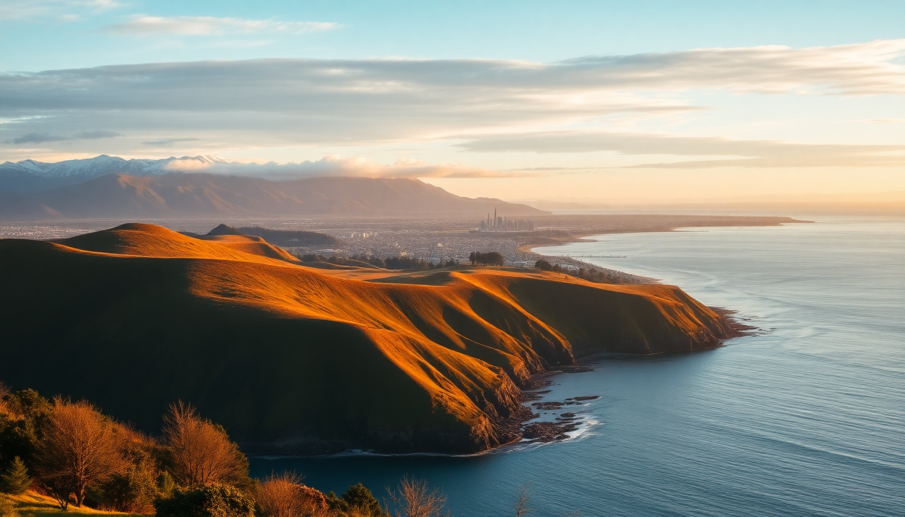

10-Day New Zealand Itinerary: North & South Island Highlights

We landed in Auckland on a Tuesday morning, jet-lagged but buzzing. Ten days to cover both islands felt tight, but with a few early flights and disciplined driving, we hit the big four: Auckland, Rotorua, Queenstown, and Milford Sound. Here’s exactly how we did it, what we’d repeat, and what we’d skip.
Is 10 days enough for both islands?
Honestly, it’s tight but doable if you fly between islands rather than taking the ferry. We booked a one-way rental from Auckland to Queenstown, dropped it at the airport, and flew back north. That saved us two full days of driving. The key is to treat each island as a separate block: three days on the North Island, then fly to the South Island for the rest.
We used Air New Zealand for the Auckland to Queenstown leg—the flight is just under two hours. Book early; prices jump close to departure.
What should we do in Auckland without wasting time?
Auckland felt like a city you pass through, not linger in. We spent one full day here and that was enough. Start at the Sky Tower for a quick city orientation—skip the restaurant, just go up, look, leave. Then walk down to Viaduct Harbour for a coffee at Mojo; the flat whites are legit.
For lunch, hit Depot Eatery on Federal Street. The sliders and oysters are worth the queue. Afternoon tip: drive 20 minutes to Mount Eden for a 360-degree view of the city and both harbors. It’s free, and the crater at the top is genuinely impressive.
- Sky Tower – quick visit, good for photos
- Viaduct Harbour – stroll and coffee at Mojo
- Depot Eatery – best sliders in the city
- Mount Eden – free viewpoint, short walk up
We stayed at Hotel DeBrett in the CBD. Small rooms, great location, decent price for Auckland. If you’re on a budget, the YHA Auckland on City Road is clean and central.
Is Rotorua worth the drive from Auckland?
Yes, but only for one night. The drive from Auckland to Rotorua takes about three hours on State Highway 1. It’s a straight shot, but traffic around the Bombay Hills can slow you down. We left Auckland at 9 a.m. and checked into our motel by noon.
Rotorua smells like sulfur—you get used to it. The main draw is the geothermal activity and Maori culture. We booked a guided tour of Te Puia in the morning. The geysers are loud and real, and the kiwi bird enclosure is dark but worth the wait. The carving school on-site is a bonus.
For lunch, skip the tourist cafes on Fenton Street and drive five minutes to Capers Epicurean. Their eggs benedict with smoked fish is the best meal we had in Rotorua.
- Te Puia – geysers, mud pools, kiwi house
- Capers Epicurean – excellent brunch spot
- Polynesian Spa – hot pools with lake views (skip the sulfur baths, go for the alkaline ones)
We stayed at Wylie Court Motor Lodge—basic but spotless, with a small kitchenette. For a splurge, Pullman Rotorua is right in town and has a decent pool.
What’s the best way to see Queenstown in two days?
Queenstown is the adventure capital, but it’s also absurdly expensive. We had two full days here, and that felt like the sweet spot. Day one: we did the Ben Lomond Track early—it’s a steep three-hour hike up, but the view of Lake Wakatipu from the saddle is free and unbeatable. Bring water and a jacket; the wind at the top is brutal.
Day two: we took the Skyline Gondola up to the luge track. Yes, it’s touristy, but the luge is genuinely fun for adults. Book the combo ticket online to skip the queue. For lunch, Fergburger is the obvious choice—we waited 25 minutes and it was worth it. The “Chief Wiggum” with bacon and blue cheese is the move.
For dinner, Rata by Josh Emmett is a cut above the rest. The lamb shoulder is the best thing we ate in New Zealand. Book a week ahead.
- Ben Lomond Track – free, hard hike, incredible views
- Skyline Gondola + Luge – touristy but fun
- Fergburger – iconic, long line, worth the wait
- Rata – fine dining without the pretension
We stayed at The Rees Hotel on the lakefront. Rooms are large, and the balcony view of the Remarkables is worth the premium. Budget option: Absoloot Hostel in town is clean and social.
Should we book a Milford Sound cruise or drive ourselves?
Drive yourself, but only if you’re confident on narrow, winding roads. The route from Queenstown to Milford Sound takes about four hours each way, including a stop at Homer Tunnel (single-lane, expect a 10-minute wait). We left at 6 a.m. and arrived by 10:30 a.m.
We booked the Southern Discoveries cruise at 11 a.m. It’s a two-hour boat ride past waterfalls, seals, and sheer rock walls. The boat is comfortable, and the commentary is informative without being cheesy. Bring a rain jacket—even on a sunny day, the spray from Stirling Falls soaks you.
The drive back felt long, but the scenery along the Milford Road (State Highway 94) is some of the best in the country. Stop at Mirror Lakes for a quick photo—it’s literally right off the road.
- Milford Road – scenic drive, allow 4 hours each way
- Homer Tunnel – single lane, patience required
- Southern Discoveries cruise – solid choice, 2 hours
- Mirror Lakes – quick photo stop, free
If you don’t want to drive, many tour companies run day trips from Queenstown. We didn’t use one, but friends swore by Cheeky Kiwi Travel for small-group tours.
FAQ
Can we skip Rotorua and add more days to the South Island? Yes. If you’re not into geothermal pools or Maori culture, fly straight from Auckland to Queenstown and spend those three days in Wanaka or Te Anau instead. We liked Rotorua, but it’s not essential.
Is Milford Sound too touristy? It’s busy, but the scale of the place dwarfs the crowds. The cruise boats are frequent, but the fjord is massive enough that it never felt packed. Go on a weekday if you can.
What’s the best way to get between islands? Fly. The Interislander ferry from Wellington to Picton takes three hours and costs about the same as a flight, but you lose a whole day. We flew Air New Zealand from Auckland to Queenstown—fast, reliable, and the views of the Southern Alps on approach are spectacular.
Conclusion
- Fly between islands to save time; drive within each island for flexibility
- Auckland is a gateway, not a destination—one day is enough
- Rotorua works best as a one-night stop for geothermal sights
- Queenstown deserves two full days; hike Ben Lomond and eat at Rata
- Milford Sound is a long day trip from Queenstown, but the scenery justifies the drive